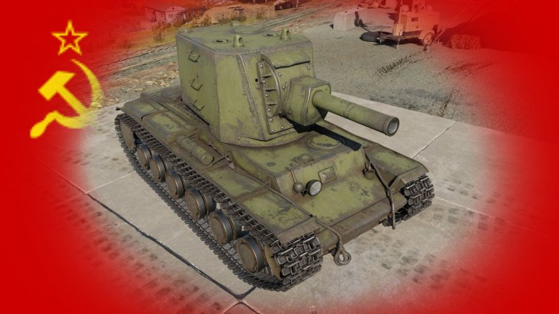
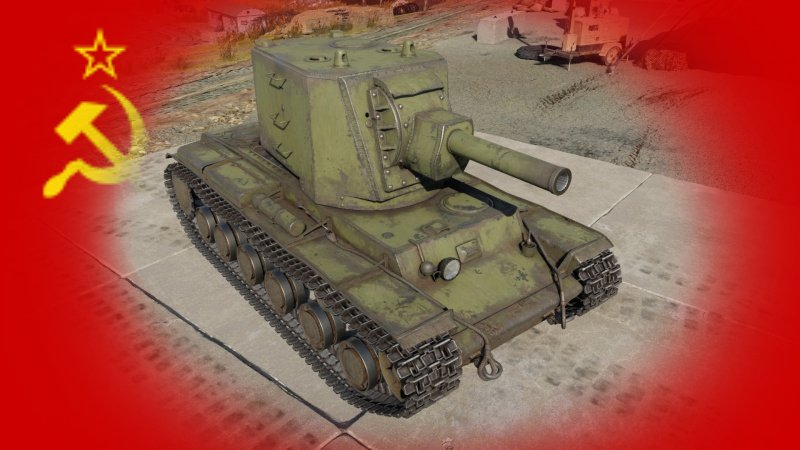
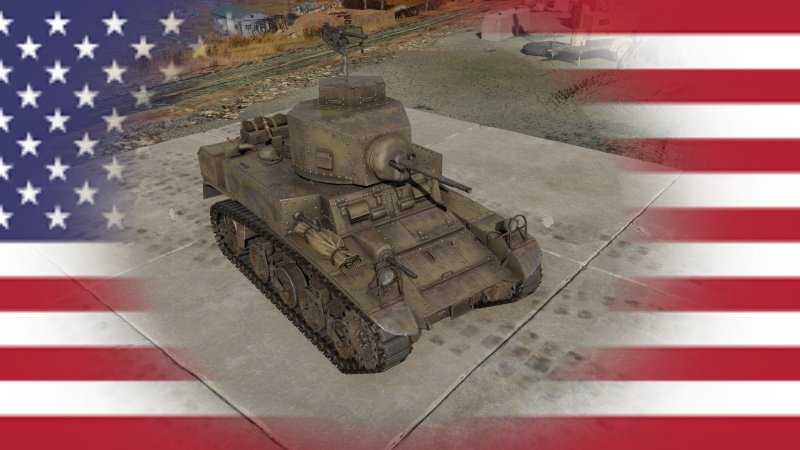
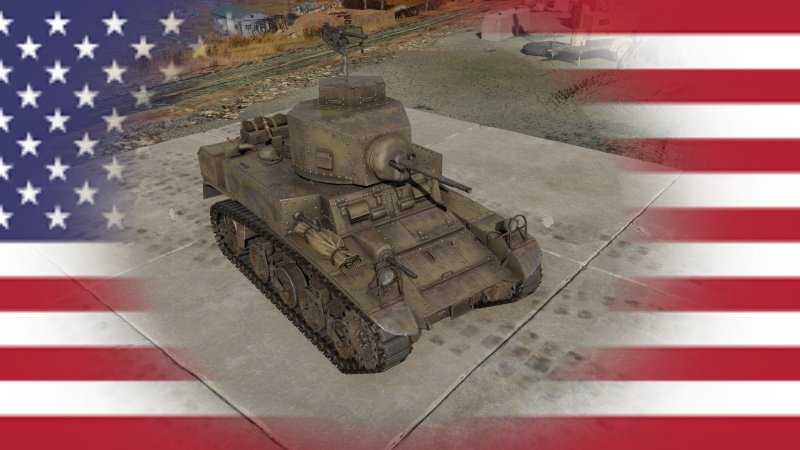
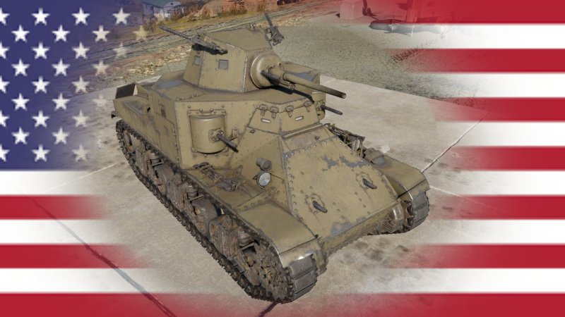
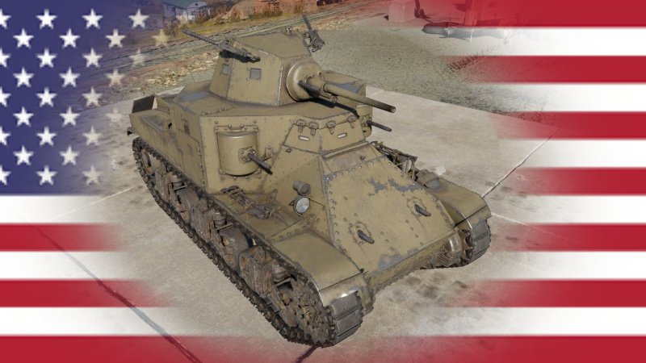
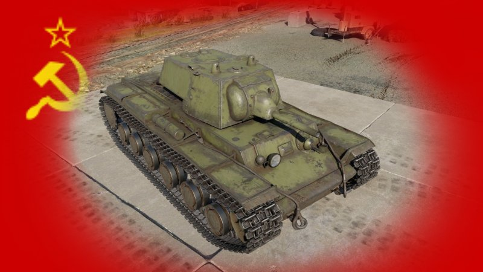
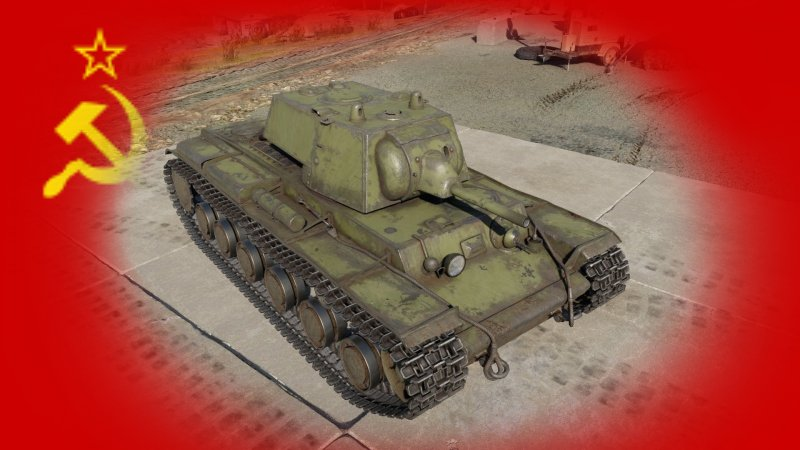
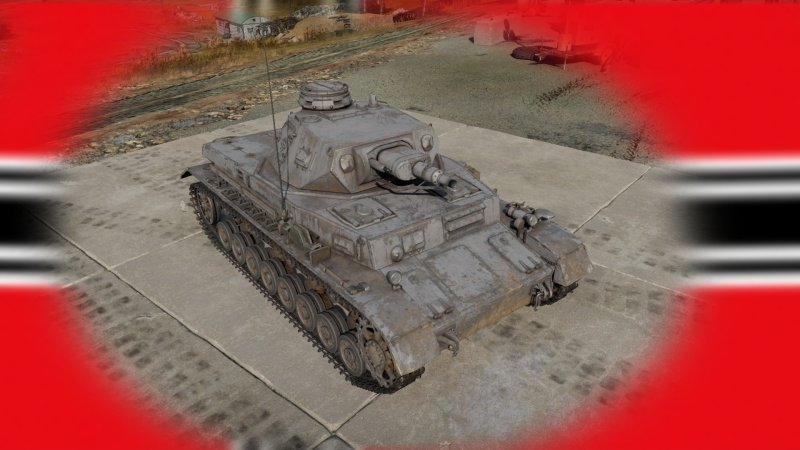
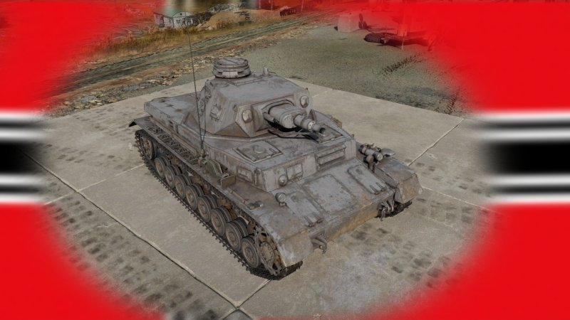

¡Adéntrate en el mundo acorazado con "The D Point"!
Bienvenido a "The D Point", tu portal definitivo para explorar la fascinante historia y tecnología de los tanques. Aquí te sumergirás en un viaje a través del tiempo y las fronteras, descubriendo algunos de los vehículos blindados más emblemáticos que han surcado los campos de batalla a lo largo de la historia.
Prepárate para conocer a los titanes de acero que han definido el curso de las guerras.
VEHICULOS TERRESTRES
PAÍSES
Seleccione un país
Tanques Ligeros
Un tanque o carro de combate ligero es un tipo de carro de combate inicialmente diseñado para movimiento rápido, y en la actualidad empleado principalmente en conflictos de baja intensidad. Los primeros tanques ligeros generalmente estaban armados y blindados de forma similar a un automóvil blindado, pero usaban orugas con el fin de proporcionar una mejor movilidad a través del campo.
Tanques Medianos
El tanque mediano, como su nombre indica, representaba un equilibrio de características entre la movilidad y el reconocimiento de los tanques ligeros, y el blindaje y armamento de los tanques pesados. Los tanques más producidos, económicos y eficaces de la Segunda Guerra Mundial (el T-34 soviético, el M4 Sherman estadounidense y el Panzer IV alemán) eran tanques medios, y el éxito del concepto conduciría posteriormente al desarrollo del tanque de combate principal
Tanques Pesados
Un tanque o carro de combate pesado es un tipo de tanque que ofrece una potencia de fuego y blindaje igual o mayor, respecto a vehículos más ligeros, sacrificando movilidad y maniobrabilidad.
Los tanques pesados habitualmente fueron desarrollados para romper las líneas enemigas, aunque en la práctica habrían sido más útiles en papeles defensivos que ofensivos. Las finalidades de su diseño incluían el ataque de obstáculos, crear brechas y atacar unidades acorazadas enemigas.
Destructores de Tanques
Es un vehículo blindado de combate que porta un cañón anticarro. Los cazacarros están diseñados para ser usados como apoyo anticarro a unidades de infantería y mecanizadas, en operaciones de retirada y defensa. Algunos diseños sustituyen el cañón por un lanzamisiles anticarro.
Tanques Antiaereo
artillería antiaérea autopropulsada (AAA) engloba a todos los vehículos con capacidad antiaérea dedicada, es decir, son vehículos destinados específicamente a la defensa antiaérea, cuya movilidad sirve principalmente para acompañar a las unidades blindadas en el frente de batalla.


.jpg)
 

 


 

_F.jpg) 


 

.jpg)